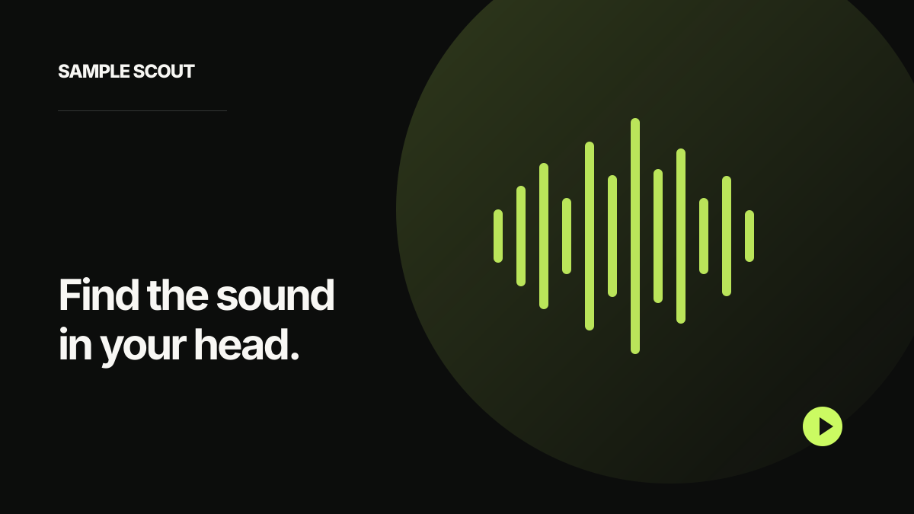

Choose your library
Select a sample folder on your Mac.
Search your sample library in plain language. Describe the sound you want, then find and preview matches from your own collection.

Select a sample folder on your Mac.
Sample Scout builds a local index of your audio.
Describe a sound in natural language and preview matching samples.
Search for “warm Rhodes” or “snare with reverb” without relying on filenames.
Listen to relevant matches and keep your creative momentum.
Indexing, search, and playback happen on your Mac. Sample audio is not uploaded to a hosted search service.
Sample Scout uses compatible CLAP audio and text embeddings to represent sounds and search descriptions in the same space. It indexes audio locally, ranks results by similarity, and plays the original local files. The model downloads on first use; sample audio is not sent to a hosted search backend.
For Apple silicon Macs running macOS 26 or newer. The download is approximately 261 MiB; the model download is roughly 600 MB on first use and requires an internet connection. The app is ad-hoc signed and not notarized, so macOS may show a Gatekeeper warning.